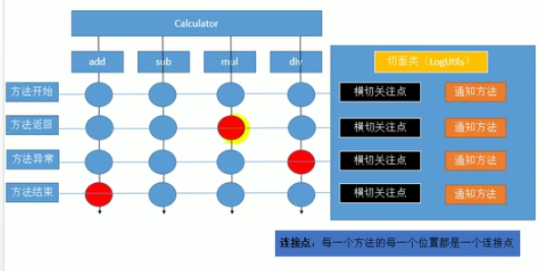
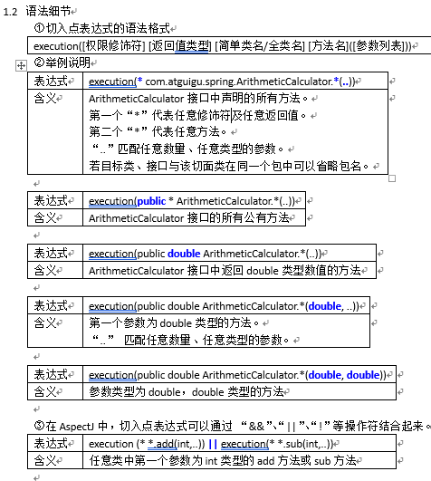
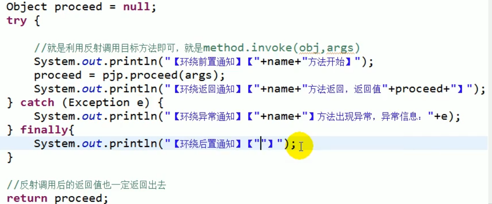
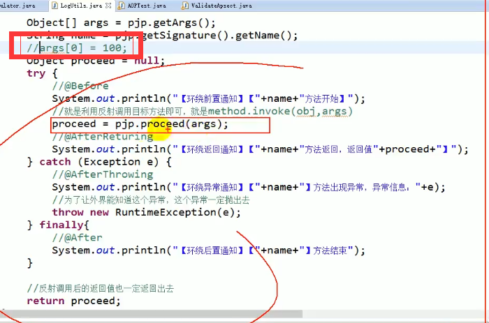

AOP复习
aop含义：面向切面编程，具体实现：动态代理
就是说在方法运行的前后 都要运行方法
具体来说就是在
- 方法开始
- 方法返回
- 方法异常
- 方法结束
在这些地方调用方法的话叫做横切关注点

连接点
方法和横切的交点叫做连接点
连接点：每一个方法的每一个位置都是一个连接点（蓝点）
切入点
切入点就是真正需要执行日志记录的地方。（红点）
切入点是感兴趣的点，是连接点的子集
AOP使用步骤
导包——写配置——使用
在Spring中启用AspectJ注解支持
spring-aop-4.3.18.RELEASE.jar – 这个包功能不是很强大
外部导入JAR包（加强版面向切面-即使没有实现接口 也能创建动态代理）
- com.springsource.net.sf.cglib-2.2.0.jar
- com.springsource.org.aopalliance-1.0.0.jar
- com.springsource.org.aspectj.weaver-1.6.4.RELEASE.jar
首先把目标类和切面类（封装了通知方法的类）导入
先设置包扫描：
1 |
|
这里一定记得context和aop名称空间要自己写
然后两个类上面要标注@component等注解
复习-IDEA中导包的方法
直接把文件拷贝到lib目录下不算导包，还应该按照下面这个页面操作
https://blog.csdn.net/hwt1070359898/article/details/90517291
到IDEA 的project structure 中操作
没有指定切点
org.springframework.beans.factory.BeanCreationException: Error creating bean with name ‘calc’ defined in file [E:\IdeaProjects\Spring-MVC-review\out\production\Spring-MVC-review\com\runsstudio\aop_review\bean\Calc.class]: Initialization of bean failed; nested exception is
java.lang.IllegalStateException: Must set property ‘expression’ before attempting to match
接口为什么不加入在IOC容器中？
接口没有实现的方法 实际上不加入容器也可以
切入点表达式：
execution([权限修饰符] [返回值类型] [简单类名/全类名] 方法名)

注意 权限位置不能写* 只能支持public public写不写都行
最模糊的：execution(* * . * (..))
异常的处理
1 |
|
这里的throwing = “e” 要和函数参数里面的Exception e一起用
返回后处理
1 |
|
Object res接受参数，如果改成Double res 只能接受Double返回值的
环绕通知的原理

就是用一个proceed函数来决定位置
本质上就是动态代理的花里胡哨的升级版hhh
一个环绕通知其实就相当于之前的before after的集合
环绕通知优先于普通通知执行
环绕通知强大的地方就在于他可以改原始目标方法的参数

AOP的使用场景
- AOP日志，记录在数据库中
- AOP权限验证
- 安全检查
- 事务控制
其实相当于Filter 能做的 AOP都能做